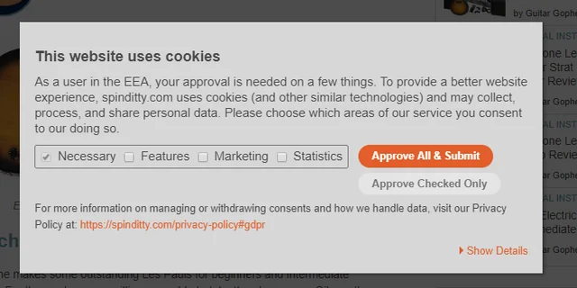

What is a dark pattern?
The term dark patterns was created by UX designer Harry Brignull in 2010. These patterns are deceptive design ways used in websites, forms, emails, and apps to manipulate users into actions they might not be meant to take. At their core these dark patterns exploit cognitive biases by leveraging the way our brains process information to push us towards specific decisions to benefit the service provider, often at the user’s expense.
How do dark patterns affect data consent?
Dark patterns can undermine user consent like having hidden or hard to find “Reject” buttons making it hard for users to opt out of data collection. Having pre checked boxes automatically opting the users into data sharing without explicit consent. Lastly, emotional manipulation by language that shames users into consenting, like sites displaying countdown timers that reset upon page refresh, creates a false sense of urgency.

Ethical Framework Application (Kantian Ethics)
Dark patterns at their core exploit the human psyche, manipulating users into making decisions they would not have made under normal circumstances. These design strategies often rely on cognitive biases or subtle forms of coercion, leading people to consent to things like sharing personal data, subscribing to services, or spending money without fully realizing the consequences. When we analyze dark patterns through the lens of Kantian ethics, the moral faults become especially clear. Kantian ethics is the idea that decisions should be made with duty and reasoning as the main way to determine if a decision is morally right or wrong. The principle insists on respecting human dignity, autonomy, and rationality. Dark patterns fundamentally violate this principle by prioritizing profit or engagement over the user's ability to make informed and rational decisions. They are manipulative by design, removing the user’s capacity to exercise free will, which Kant would argue is essential to moral action. Because dark patterns rely on exploiting vulnerabilities that people often cannot control, they are not only deceptive but morally wrong. Even if they are legal or profitable, they are still morally wrong under Kantian ethics. Manipulating people for gain, regardless of outcome, fails the test of treating others with inherent moral worth.
Original examples, a brief case study, or context from real systems
New consent management platforms, or CMPs, went into effect in 2020 to comply with EU regulations. Upon closer inspection of these platforms and their designs, it was worryingly obvious that dark patterns and implied consent litter the space. In this particular paper, a field experiment was conducted to analyze how the most common design choices in the CMPs affect consent choices. This provided very real data to use as evidence for enforcement of the GDPR (General Data Protection Regulation) in the EU and hopefully the establishment of a similar nation-wide regulation here in the states.
Dark Patterns after the GDPR: Scraping Consent Pop-ups and Demonstrating their Influence from the Proceedings of the 2020 CHI Conference on Human Factors in Computing SystemsDark patterns, as they’re commonly understood, are incredibly prevalent in the design of UIs across the internet. There has been a conscious effort to document and categorize particularly worrisome examples to support this conclusion beyond mere hearsay. But as posed by several authors in the paper What Makes a Dark Pattern… Dark? The patterns extend beyond what appears on your screen. There are elements of psychology, economics, ethics, and philosophy. In their writing, the authors pose that further research on dark patterns will allow us to more concretely frame the issues beyond what is, in essence, subjective criticism. The paper speaks to us as it connects our topic with the mission statement of this class, which is examining issues that plague our digital lives through the lens of ethics and what could be done to make change.
What Makes a Dark Pattern... Dark? from the Proceedings of the 2021 CHI Conference on Human Factors in Computing SystemsDark Pattern and Data Consent Dipictions
This collage showcases various examples of dark patterns in cookie consent interfaces:

{kind=link}
{kind=link}
{kind=link}
{kind=link}
{kind=link}
{kind=link}
{kind=link}
{kind=link}
{kind=link}
Types and Methods of Dark Patterns
Tricks used in websites and apps that make you do things that you didn't mean to.
Comparison prevention
The user struggles to compare products because features and prices are combined in a complex manner, or because essential information is hard to find.
Confirmshaming
The user is emotionally manipulated into doing something that they would not otherwise have done.
Disguised ads
The user mistakenly believes they are clicking on an interface element or native content, but it's actually a disguised advertisement.
Fake scarcity
The user is pressured into completing an action because they are presented with a fake indication of limited supply or popularity.
Fake social proof
The user is misled into believing a product is more popular or credible than it really is, because they were shown fake reviews, testimonials, or activity messages.
Fake urgency
The user is pressured into completing an action because they are presented with a fake time limitation.
Forced action
The user wants to do something, but they are required to do something else undesirable in return.
Hard to cancel
The user finds it easy to sign up or subscribe, but when they want to cancel they find it very hard.
Hidden Costs
The user is enticed with a low advertised price. After investing time and effort, they discover unexpected fees and charges when they reach the checkout.
Hidden subscription
The user is unknowingly enrolled in a recurring subscription or payment plan without clear disclosure or their explicit consent.
Nagging
The user tries to do something, but they are persistently interrupted by requests to do something else that may not be in their best interests.
Obstruction
The user is faced with barriers or hurdles, making it hard for them to complete their task or access information.
Preselection
The user is presented with a default option that has already been selected for them, in order to influence their decision-making.
Sneaking
The user is drawn into a transaction on false pretenses, because pertinent information is hidden or delayed from being presented to them.
Trick wording
The user is misled into taking an action, due to the presentation of confusing or misleading language.
Visual interference
The user expects to see information presented in a clear and predictable way on the page, but it is hidden, obscured or disguised.
Conclusion
As we now know, Dark patterns have been on the rise and it is important to be aware of the dangers before it ends up affecting more users. These websites will do whatever they can in order to make the user fall for any schemes the campaign is going for.
Signs to be mindful of / important practices to keep in mind when checking for dark patterns.
- Information should be transparent.
- All material should be clear and easy to understand for all consumers.Important information such as key terms should not be hidden behind other links.
- Cancellations for mechanisms such as subscriptions should be simple alongside making an account/signing up.
- Avoid bait offers when trying to cancel anything.
- Privacy choices must be easy to both access and understand.
It is important to remember and ask, “Is the following information clearly shown and is there anything trying to keep me from leaving?”. Any website that asks for too much information is a red flag.